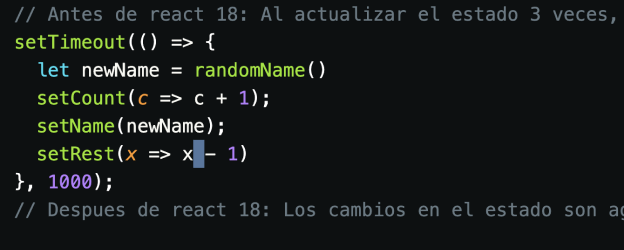
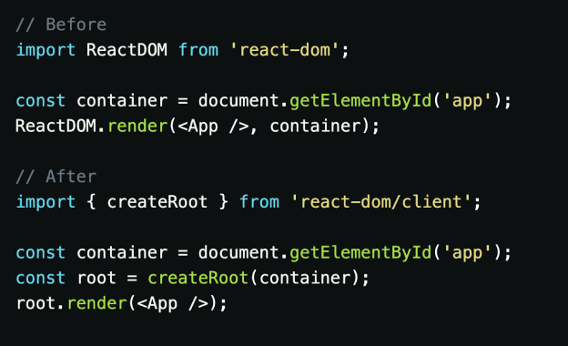

¿Concurrencia, actualización por lotes, transiciones, nuevos Hooks? React 18 trae grandes cambios que abren la puerta a muchas características nuevas con gran impacto en la forma en la que construimos aplicaciones y en la experiencia del usuario.
La Concurrencia es un cambio fundamental en el núcleo de React y en como renderiza la interfaz, es una
actualización enorme de lo que ocurre tras bambalinas que desbloqueara nuevas y poderosas capacidades en
el futuro.
La concurrencia es la capacidad de que las diferentes partes de un programa puedan ejecutarse sin un
orden especifico o de manera parcial, sin afectar el resultado final.
Cabe aclarar que concurrencia es diferente de paralelismo, la concurrencia se trata de manejar varias
tareas, pausarlas y resumirlas a conveniencia, mientras que el paralelismo trata de realizar varias
tareas a la vez.
Sin la concurrencia, el día que quisiéramos organizar una fiesta luciría más o menos así:
Abrimos nuestra red social favorita y le mandamos un mensaje a nuestro amigo David, entonces esperamos
pacientemente sin cambiar de pestaña, sin cambiar de chat hasta que nos responda y terminemos la
conversación. Posteriormente, le mandamos un mensaje a Alejandra y esperamos sin cambiar de pestaña, sin
cambiar de chat hasta que nos responda y terminemos la conversación. Y así consecutivamente hasta haber
contactado a todas las personas que deseamos invitar.
De manera similar, en React 18, React puede interrumpir, pausar, reanudar o abandonar un proceso. Esto
permite que React responda rápidamente a la interacción del usuario, incluso si se encuentra en medio de
una tarea pesada.
Antes de React 18, el renderizado era una transacción sincrónica única e interrumpida y, una vez que
comenzaba el renderizado, no podía interrumpirse. Era necesario completar el renderizado para poder
disparar un nuevo cambio en la interfaz. Y así consecutivamente.
Al introducir la concurrencia, React le abre las puertas a Suspense, Server Components, Transitions y
otros tantos features que gradualmente nos permitirán mejor la experiencia del usuario.
Agrupa los cambios que realizamos en el estado en todos los lugares posibles para evitar re-renderizar la interfaz múltiples veces y mejorar el rendimiento de tu aplicación.
Las transiciones en React es nuevo concepto que nos permiten distinguir entre las actualizaciones
prioritarias y las no prioritarias:
actualizaciones urgentes o prioritarias son aquellos micro cambios que necesitan una respuesta
inmediata para satisfacer las expectativas de un usuario, por ejemplo: llenar un input, dar un clic en
un checkbox.
Las actualizaciones de transición son aquellas que modifican la UI.
Por ejemplo, al trabajar con filtros, los usuarios quieren ver la casilla que acaban de clickear marcada
al instante, esta es una actualización urgente, sin embargo, solo están interesados en ver los
resultados finales de su filtrado y no en todos los estados intermedios generados cada que añadan un
nuevo filtro, esta es una actualización de transición
A partir de React 18, los estados de carga se vuelven un concepto fundamental en nuestras aplicaciones, a diferencia de las versiones anteriores, esta es compatible el Server Side Render (SSR).
useId es un nuevo hook en React 18 para generar ID únicos que son estables en el servidor y el cliente,
esto para prevenir errores en los procesos de Server Side Render.
Se utiliza de la siguiente manera:
A partir de React 18, dejara de ser compatible con Internet Explorer, un navegador al que le diremos
adios el 15 de junio de 2022, ya que Microsoft dejara de darle soporte.
Si necesitas admitir Internet Explorer, debes quedarte en React 17
Pruébalo ya mismo.
Si deseas explorar alguna de estas nuevas características o comenzar a utilizarlo en tu nuevo proyecto
React 18, solo necesitas instalar la versión más reciente con tu gestor de paquetes preferido:
Y en el archivo base de tu aplicación tendrás que usar createRoot en vez del famoso ReactDOM.render
